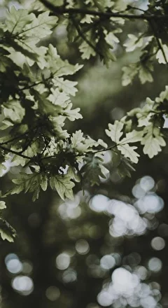
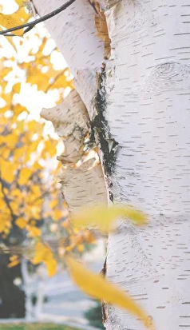
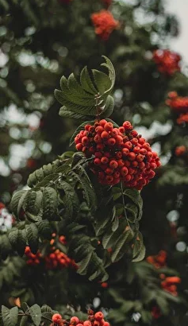
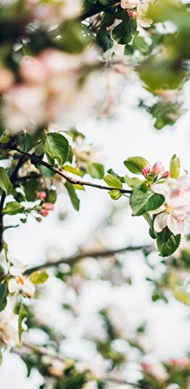

-
Клен
Клен Acer - огромный род растений, относящихся к семейству сапиндовые. Листопадное дерево от 5 до 40 м высотой или кустарник высотой до 10 м с несколькими побегами, растущими от основания. Очень декоративно осенью за счет своей разнообразной окраски. Обычно клены растут достаточно быстро. -

Дуб
Дуб Quercus - мощное, высокое, листопадное с объемной пышной кроной дерево из семейства буковые. Живет чрезвычайно долго — 300 - 400 лет, известны отдельные экземпляры возрастом до 2000 лет. Дуб устойчив к неблагоприятным условиям, долговечен, и в то же время - это очень декоративное дерево. -

Береза
Береза Betula – наиболее часто встречающаяся лиственная порода в Северном полушарии, семейство березовые. Это красивое дерево высотой 30-45 м или кустарник с ажурной кроной. Главная отличительная особенность – покрытый берестой белый, желтоватый или розоватый ствол. -

Рябина
Береза Betula – наиболее часто встречающаяся лиственная порода в Северном полушарии, семейство березовые. Это красивое дерево высотой 30-45 м или кустарник с ажурной кроной. Главная отличительная особенность – покрытый берестой белый, желтоватый или розоватый ствол. -

Яблоня декоративная
Декоративная яблоня Malus - невысокое дерево или кустарник из семейства розоцветные. Цветы ароматные, в зависимости от сорта имеют различную окраску, появляются в мае. Плоды также могут быть различными по окраске и размеру.